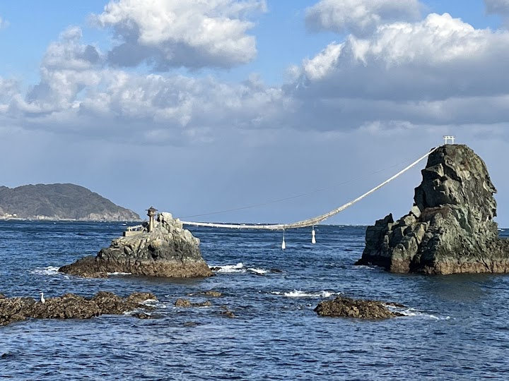
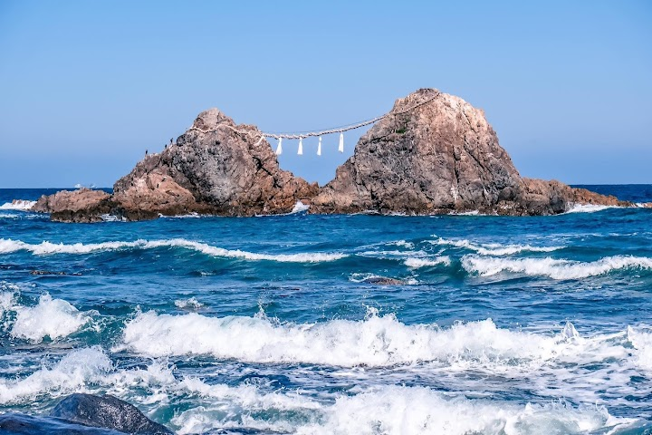
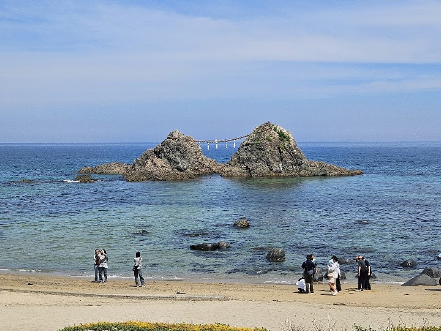
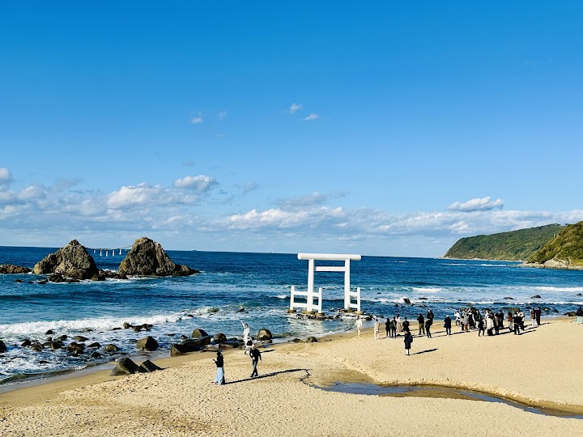
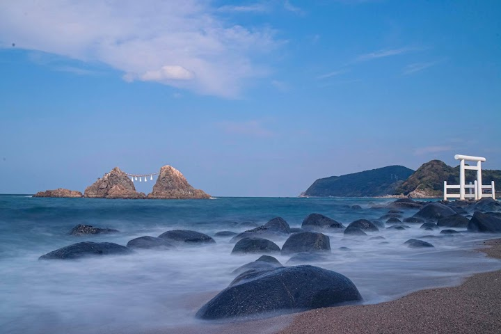

Sakurai Futamigaura's Couple Stones
Two large rocks joined by a Shinto rope stand in the sea off the Itoshima coast, known as the Couple Rocks, with a white torii gate in the water in front. The sunset views are famous, and the look changes with the tide.
Open in Google Maps (street view, more photos and reviews there)






Visitor tips on finding it and getting there
Sakurai Futamigaura in Itoshima is famous for its "Couple Stones" (Meoto Iwa) and striking white torii gate. I am going to offer you more useful travel tips based on the sharing from an experienced local guide. 1. Time your visit for low tide by the tide app if you want to walk up to / get closer to the sacred white gate. 2. Arrive 30 minutes before sunset to look for a prime spot on the beach. See the sun dip between the stones. The “blue hour” that follows offers stunningly romantic skies. This beach is ranked as one of the 100 best sunset views in Japan. During the summer solstice, the s